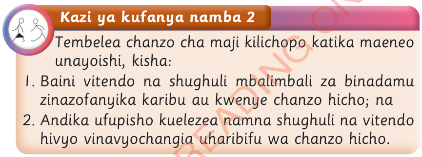

Kazi ya kufanya namba 2
Tembelea chanzo cha maji kilichopo katika maeneo unayoishi, kisha:

1. Baini vitendo na shughuli mbalimbali za binadamu zinazofanyika karibu au kwenye chanzo hicho; na
2. Andika ufupisho kuelezea namna shughuli na vitendo hivyo vinavyochangia uharibifu wa chanzo hicho.